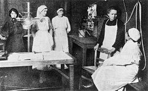
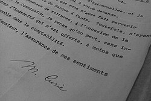

PRIMERA GUERRA MUNDIAL
El 1 de agosto de 1914, días después del estallido de la Primera Guerra Mundial, Irène (de 17 años) y Ève (10) se habían trasladado a L’Arcouest (Ploubazlanec) bajo el cuidado de unos amigos de su madre.Marie permaneció en París custodiando el Instituto y las muestras de radio. El Gobierno consideró que los bienes del Instituto del Radio eran un tesoro nacional y que debían protegerlos, por lo que Curie trasladó temporalmente el laboratorio a Burdeos.Ella no pudo servir a Polonia y decidió colaborar con Francia.

Durante el conflicto bélico, los hospitales de campaña carecían de personal experimentado y máquinas de rayos X apropiadas, así que propuso el uso de la radiografía móvil cerca de las líneas del frente para ayudar a los cirujanos del campo de batalla. Aseguró que los soldados heridos estarían mejor atendidos si los cirujanos contaban a tiempo con las placas radiográficas. Después de un rápido estudio de la radiología, anatomía y mecánica automotriz, adquirió equipos de rayos X, vehículos y generadores auxiliares y diseñó unidades móviles de radiografía, a las que llamó «ambulancias radiológicas» (ambulances radiologiques), pero que llegaron a ser conocidas a posteriori como las «pequeñas Curie» (petit Curie). Se convirtió en la directora del Servicio de Radiología de la Cruz Roja francesa y creó el primer centro de radiología militar de Francia, operativo a finales de 1914.Asistida desde el principio por su hija Irène (de 18
años) y un médico militar, dirigió la instalación de veinte unidades móviles de radiografía y otras doscientas unidades radiológicas en los hospitales provisionales en el primer año de la guerra. Más tarde, comenzó a instruir a otras mujeres como ayudantes. En julio de 1916, fue una de las primeras mujeres en obtener un carné de conducir, pues lo solicitó para manejar personalmente las unidades móviles de rayos X.
En 1915, produjo cánulas que contenían «emanaciones de radio», un gas incoloro y radiactivo emitido por ese elemento —posteriormente identificado como radón— y que se utilizaban para la esterilización de tejidos infectados. Proporcionó el elemento químico de sus propios suministros. Se estima que más de un millón de soldados heridos fueron tratados con sus unidades de rayos X. Ocupada con este trabajo, hizo poca investigación científica durante este período. A pesar de sus contribuciones humanitarias a los esfuerzos bélicos de los franceses, nunca recibió en vida reconocimiento formal por parte del Gobierno francés.
Inmediatamente después del comienzo de la contienda, intentó vender sus medallas de oro del premio Nobel y donarlas a las actividades bélicas, pero el Banco de Francia rehusó aceptarlas, por lo que tuvo que comprar bonos de guerra con el dinero de sus premios. En su momento dijo: «Voy a renunciar al poco oro que poseo. A esto añadiré las medallas científicas, que me son inútiles. Hay algo más: por pura pereza había permitido que el dinero de mi segundo premio Nobel se quedara en Estocolmo en coronas suecas. Esa es la cantidad principal de lo que poseemos. Me gustaría traerlo aquí e invertirlo en préstamos de guerra. El Estado lo necesita. Solo que no tengo ilusiones: ese dinero probablemente se perderá. »También fue miembro activo de los comités dedicados a la causa polaca en Francia. Después de la guerra, resumió sus experiencias en un libro titulado La radiologie et la guerre (1919).
POSGUERRA
En 1920, en el 25.º aniversario del descubrimiento del radio, el Gobierno francés benefició a Marie Curie con un estipendio que anteriormente estaba a nombre de Louis Pasteur (1822-1895).En 1921 planeó un viaje a los Estados Unidos para la recaudación de fondos en la investigación sobre el radio. Los inventarios del Instituto se habían reducido drásticamente como resultado de los tratamientos terapéuticos en la Primera Guerra Mundial y el precio de cotización del gramo de radio, en ese momento, era de 100 000 dólares estadounidenses. El 4 de mayo de 1921, Marie Curie viajó junto con sus dos hijas y acompañada por la periodista Marie Melony a bordo del RMS Olympic.Siete días más tarde, llegaron a la ciudad de Nueva York, donde fue recibida por una gran multitud. Sobre su llegada, el New York Times publicó en su portada que Madame Curie tenía la intención de «poner fin al cáncer». «El radio es la cura para cualquier tipo de cáncer», afirmó en la página 22 de dicho periódico. Durante su estancia, la prensa dejó en segundo plano su carácter de científica y, en su lugar, era regularmente enaltecida como una «sanadora»; Marie Curie también hizo muchas apariciones públicas con sus hijas. El propósito de ese viaje era recaudar fondos para la investigación sobre el radio. La editora Mrs. William Brown Meloney, después de entrevistarla, creó el Marie Curie Radium Fund y recaudó con la publicidad de viaje el dinero suficiente para comprar el elemento químico.
En 1921, el presidente Warren G. Harding la recibió en la Casa Blanca y le entregó simbólicamente un gramo de radio recolectado en el país norteamericano. Antes de la reunión, había crecido el reconocimiento en el extranjero, pero fue opacado por el hecho de que no tenía distinciones oficiales francesas para llevar en público. El Gobierno francés le había ofrecido la Legión de Honor, pero ella no la aceptó. En los Estados Unidos recibió nueve doctorados honoris causa,aunque rechazó uno en el campo de la física que la Universidad Harvard le ofreció porque «no había hecho nada importante [en esa ciencia] desde 1906».Antes de abordar el RMS Olympic el 25 de junio a su regreso a Europa, dijo: «Mi trabajo con el radio, [...] sobre todo durante la guerra, dañó gravemente mi salud, haciendo imposible para mí visitar todos los laboratorios y colegios a los que tenía un profundo interés».En octubre de 1929, visitó por segunda vez los Estados Unidos. En esta estancia, el presidente Herbert Hoover le entregó un cheque por 50 000 dólares, que fue destinado a la compra de radio para la sucursal del Instituto en Varsovia.También viajó a otros países dando conferencias en Bélgica, Brasil, España y Checoslovaquia.

Documento firmado por Marie Curie en los archivos de la Sociedad de las Naciones.
Cuatro miembros del Instituto del Radio recibieron el premio Nobel, entre ellos, Irène Joliot-Curie y su esposo, Frédéric. Con el tiempo, se convirtió en uno de los cuatro principales laboratorios de investigación de la radiactividad, junto con los Laboratorios Cavendish de Ernest Rutherford, el Instituto para la Investigación sobre el Radio (en Viena) de Stefan Meyer y el Instituto de Química Emperador Guillermo de Otto Hahn y Lise Meitner.
En agosto de 1922, Marie Curie fue miembro constitutivo de la Comisión Internacional para la Cooperación Intelectual de la Sociedad de las Naciones. Ese año ingresó como miembro de la Academia Nacional de Medicina de Francia. En 1923, publicó una biografía de su difunto marido, titulada Pierre Curie.En 1925, visitó Polonia para participar en la ceremonia de colocación de la primera piedra del Instituto del Radio en Varsovia.El laboratorio fue equipado con las muestras de radio adquiridas en su segundo viaje a los Estados Unidos.El Instituto abrió en 1932 y Bronisława Dłuska fue nombrada directora.Estas distracciones de sus labores científicas y la publicidad que la rodeaba le causaron muchas molestias, pero proporcionaron los recursos necesarios para su obra.Desde 1930 hasta su muerte, fue miembro del Comité Internacional de Pesos Atómicos de la IUPAC.